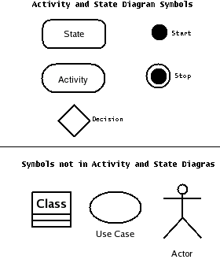
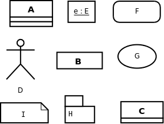
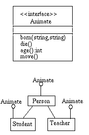
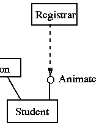
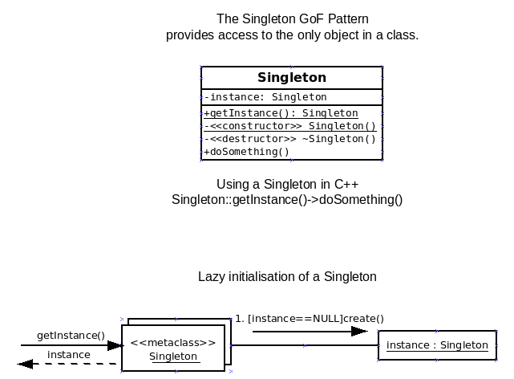

| Version# | Date | Description | Author
|
|---|
| 0 | 2005-01-03 | Used boiler plate to make template | RJB
|
| 1 | 2005-03-02 | Added chapter headings and outlines | RJB
|
| 2 | 2005-03-08 | Added Notes and figures | RJB
|
| 3 | 2005-03-09 | Added questions and some figures | RJB
|
| 4 | 2006-03-06 | Update to new formats etc | | RJB
|
| 5 | 2006-03-07 | Improved the notes | RJB
|
| 6 | 2007-12-07 | Removing Activity and State Diagrams | RJB
|
| 7 | 2007-03-02 | Added note on IDs to Objects | RJB
|
| 8 | 2007-03-04 | Added note on showing interfaces in lifelines | RJB
|
| 9 | 2011-03-25 | Added notes on GoF Patterns | RJB
|
| 10 | 2012-03-02 | Added code for IDs to Objects | RJB
|
**** Be sure you know the following fact:
- An activity and a state is shown as a box with rounded corners. They
are not boxes(classes or objects). They are not ovals,
these are use cases. Actions do things and have rounded corners.


Exercise: Write down what does each symbol above probably means...
Answers: click the letter: A B C D E F G H I
or select
[ 17exans.html ]
for all the answers + the diagram.
Can you list all nine GRASP patterns without following the next
link:
[ 16answer.html ]
Here are the GRASP patterns
[ GRASP_(Object_Oriented_Design) ]
on the Wikipedia.
The GoF patterns use a lot of interfaces. Here are some notes on them.
An interface is a class that has not data but declares some operation.
It does not give any
implementation for the operations. If
an object fits an interface then you know how to call its functions but
the implementer can do different things with them. The client who uses
the interface is restricted to just using the listed functions. It is said
to
depend on the interface
or equivalently to
require the interface.
The classes that
implement the interface
are also said to require it.
In UML there are two or three notations, and
Larman covers them on pages 263 and 264.
The
lollipop notation
is a very simple way to show that a class implements an interface.
Here is an interface (Animate) and three classes that implement it.

This shows three classes that all
implement the same set of operations. Other classes can then use the operation.
You can use the standard dependency arrow ( - - - - > ) to
connect a class that requires the interface to the interface.
This relation is shown with a dotted line
or with a cup notation (new and rare).

[ ?searchtype=t&searcharg=design+patterns&searchscope=19&SORT=D&extended=0&SUBMIT=Search&searchlimits=&searchorigarg=tSoftware+design+patterns ]
[ watch?v=M9zUjF65sho ]
- GRASP helps you understand GoF Patterns
- The GoF patterns improve your grasp of GRASP.
- Good developers use the GoF names, so you need to know them.
The Gang of Four Patterns are all clever ways to use polymorphism
to make it easier to change code. They are often modeled using
the UML (class diagrams and interaction diagrams) plus English.
They will appear in quizzes, finals, and your future career.
- Introduction
- ** 26.1
Adapter
(GoF)
adapts an existing interface to be used by a different one.
[ patterns.html#Adapter ]
[ fig25_25_1.cpp ]
[ test.fig25_25_1.cpp ]
- ** 26.2 GRASP supports and explains GoF
See figure 26.3
- 26.3 Analysis in Design!?
Development is "Research and Development".... embrace change.
But is it worth redrawing a doamin diagram?
- ** 26.4
Factory
(GoF)
[ patterns.html#Factory ]
- * The Adapter pattern in 26.1 needs a way to create the adaptor objects.
The GRASP creator will not help because nobody in the domain owns an adaptor!
They are Pure Fabrications.
We get Higher Cohesion by having a specialized object that creates adaptors.
This is called a factory.
- +++ Notice the
separation of concerns
principle -- first formulated By David L. Parnas in the 1970's and adopted
by all good programmers.
- +++ On page 441 the code uses two Java techniques that do not easily map into C++.
System.getProperty("....");
The first of these accesses a collection of named properties -- for example the
"java.version" property. There exists a "System.setProperty(string key, value)"
that can add new properties. These properties are available to any statement in a Java
program. C++ does not provide anything like this.
Class.forName(...).newInstance();
THe above uses the Java reflection technology which makes the names of clases, attributes,
and functions available to a running program. Again C++ has nothing like this.
- ++ However you can still have a pointer that points at different classes depending
on data computed at run time. Here
[ testDiceGame3.cpp ]
and
[ DiceGame3.cpp ]
show you how the number of arguments in the command line controls the number
of loaded dice in the game... It use if-elses...
- + A common C/C++ technique is to place run time parameters in a simple text file with
one line per property. Each line has the name of the property, some white space,
and a value...
- + Modern designers tend to use XML to encode run time parameters as data.
- ** 26.5
Singleton
(GoF)
- * For example, we need to have a single Factory object.... A global variable
tends to incease coupling and is even illegal in some languages.
The GoF Singleton is a pretty good solution.
- * For example we want a single Controller for a small application and
choose to model it as the organization the software serves.
"One is one, and all alone, and ever more shall be."
- * The GoF Singleton is a popular solution.

[ patterns.html#Singleton ]
Code:
[ singleton.cpp ]
[ test.singleton.cpp ]
(C++),
Diagrams:
[ Singleton.pdf ]
(PDF with two small errors to find).
Exercise: translate into another OO language like Java.
- 26.6 Conclusion: handling many external services thru one interface
- ++++ Exercise. In which layer would you place this ServiceFactory? Why?
- ** 26.7
Strategy
(GoF)
[ patterns.html#Strategy ]
Example: many ways of sorting... Associate the algorithms to little objects.
Use different objects as needed.
- ++ Another example -- describing getting up. Some people drink tea and other drink coffee.
We create an abstract "Beverage" class with specializations: "Tea" and "Coffee". These
explain the different ways to "make()" a Beverage. We have a strategy pointer that
determines the Beverage in your breakfast...
- ++ Draw the UML for the Beverage model.
- ++ extend it to handle Orange Juice.
- ** 26.8
Composite
(GoF) etc.
[ patterns.html#Composite ]
- (The example on page 452 is just the kind of thing that happens when my
wife (a senior 10% off) buys something with a Club Card (20% off!) on Tuesday
nights (10% off) in a certain Department store in San Bernardino...
- Figure 26.14 page 454: count the relations connecting
CompositePricingStrategy and ISalePricingStrategy.
- Figure 26.15 page 455 refers about a special way to indicate an object
of an unknown class but that implements an interface. I can not find this
notation anywhere in the latest (2007) standards. The standard lets
you show a lifeline with the name of an interface or a class with
no symbolic difference. Ambler shows a message that hits a little
interface lollipop -- but I think KISS.
- Figure 26.16 page 456: missing italics!
- ++ Composite is a good way to handle complex and changing business rules.
- ++ Composite is a way of encoding formulae and expressions as a set of linked objects:
[ Question 5 in 05a ]
- Figures 26.18 and 26.19, pages 458 and 459: a ref refers to a
sd -- sequence diagram.`
- * 26.9
Facade
(GoF)
It often pays to hide complexity behind an intermediate object -- A Pure Fabrication
that uses Indirection to protect clients from variations inside a package.
- +++ A facade is a kind of curtain used for dramatic effect.
"The Wizard of Oz" (
[ watch?v=YWyCCJ6B2WE ]
) Pay no attention to the system behind the curtain.
[ patterns.html#Facade ]
- * 26.10
Observer
(GoF)
means that an object keeps a list of clients that wish to observe it. When a change
occurs a message is sent to all theobservers. Each observer can then request details
from the observed object. The observed object adds and deletes observers
as requested.
[ patterns.html#Observer ]
[ watch?v=Xxvpwmc-7io ]
- ++ Protected Variation -- Observer is not greatly effect if even 100 different
observers subscribe.
- The observer pattern is often used in connecting to user interfaces. For example
a controller object can register its interest in a particular button being clicked
or the mouse rolling over a part of a page... To make sure that the
observer/listener/subscriber
is set up to receive the notifications, it
must implement the right interface. See
[ ../Luv4.java ]
for a simple example in Java.
- +++ Sometimes known as the
Hollywood Principle
of "Don't call us, we will call you."
- **** page 460
IDs to Objects
I didn't pay much attention to this common practice until March 2008
when I linked it to designing logins (handout). I think
(guess) that this should become a GRASP style pattern
[ patterns.html#IDS_to_Objects ]
- ++
Finding objects given an ID
- Question: Who should find objects given their ID?
- Expert: who knows about the objects?
- Answer: The creator of the objects may know.
- Consequence 1: The creator will need to maintain a list of
the objects it has created.
- Consequenc 2: The creator will need to be involved in destroying an object as well.
You could claim that this is putting Information Expert to work.
- ++ Here
[ ID2Object.cpp ]
is some samples of this kind of code... only the names
have been changed to protect the innocent.
- +
Exercise -- fix ID2Object.
The above code is good enough for a classroom example but it is not robust enough
to be used in a real app. For example -- if a user does "input1(id)" with an
id-string that is not correct the code misbehaves.
and there is a similar problem with simpleInput.
Here is another bug --
if the user does input2 before input1...
- * 26.11 Conclusion: GRASP supports GoF
- 26.12 Resources
[ patterns.html ]
- For a video introduction to a dozen design patterns see
[ watch?v=oSSGDYJZ-m8 ]
on YouTube.
[ 17x.html ]
Correct errors, add GRASP, improve,...
[ w8.html ]
[ 17q.html ]
[ patterns_quiz.html ]